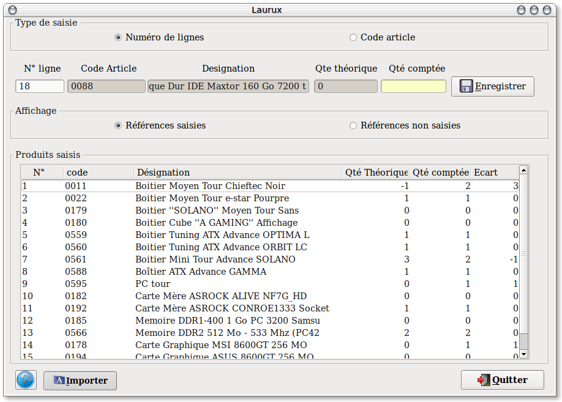
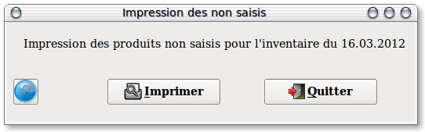
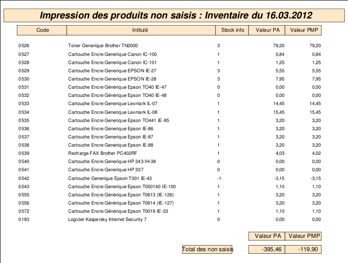
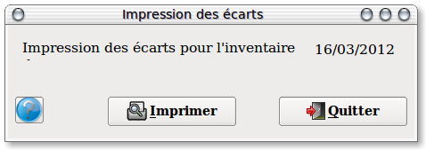
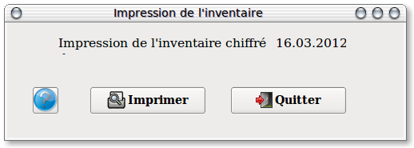
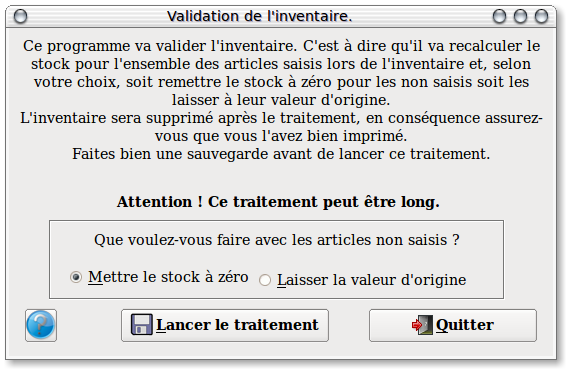

~ Comptabilité et Facturation Laurux ~

~ Comptabilité et Facturation Laurux ~ |
|
|
|
Vous pouvez choisir l'ordre de tri de l'impression de
l'inventaire, par famille ou par fournisseur. Vous pouvez également
choisir d'imprimer un inventaire faisant apparaitre les quantités
théorique du stock au jour de la génération.
Cliquer sur le bouton "Traitement" pour lancer la génération de l'inventaire, puis cliquer sur le bouton "Imprimer" pour lancer l'impression du document qui vous servira pour la saisie.
Note. Vous pouvez initialiser l'inventaire avant ou après la date de fin d'exercice. Lors de la validation, le programme insérera dans ses calculs les quantités entrées ou sorties effectuées entre la date de l'inventaire et celle de fin d'exercice.
----------------------------------------------------------------------------------------------------------------------

L'impression effectuée apres la génération de l'inventaire se présente
selon la copie d'écran ci-dessus.Remarquer que chaque ligne est
numérotée
Vous allez donc noter sur chaque ligne de produit la quantité physique relevée puis saisir ces quantités sur votre informatique.

Dans le programme de saisie, taper en premier le numéro de ligne correspondant a votre saisie puis apres validation saisir la quantité notée sur votre feuille. Valider votre saisie, vour remarquerez que le numero de ligne s'incrémente automatiquement et que vous n'avez besoin de ne saisir que la quantité.----------------------------------------------------------------------------------------------------------------------

Une seule opération pour imprimer les non saisis. Cliquez sur le bouton "Imprimer".

Vous aurez une impression semblable à cette copie d'écran.
----------------------------------------------------------------------------------------------------------------------

Une seule opération pour imprimer les écarts. Cliquez sur le bouton "Imprimer".

Vous aurez une impression semblable à cette copie d'écran.
----------------------------------------------------------------------------------------------------------------------

Une seule opération pour imprimer l'inventaire chiffré. Cliquez sur le bouton "Imprimer".

Vous aurez une impression semblable à cette copie d'écran.
----------------------------------------------------------------------------------------------------------------------

Faire obligatoirement une sauvegarde avant de valider l'inventaire.
Pour valider l'inventaire, déterminez d'abord ce que vous souhaitez faire des non saisis puis cliquez sur le bouton "Validation".
NB : Il est préférable de valider l'inventaire dès qu'il est terminé.
----------------------------------------------------------------------------------------------------------------------